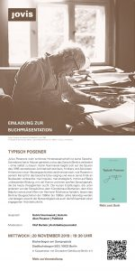
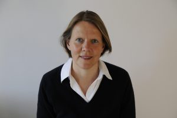

Typisch Posener
Neuerscheinung im Oktober 2019
Julius Poseners wohl schönste Hinterlassenschaft ist seine Sprache. Schreibend hat er Häuser gerettet und so das Gesicht Berlins verändert – ohne selbst zu bauen. Katrin Voermanek begibt sich auf die Spuren des 1996 verstorbenen Architekturhistorikers, Kritikers und Aktivisten. Anhand von neun Häusergeschichten zeichnet sie nach, wie Posener in seinem Kampf für das bauliche Erbe vorging und wie er seine Kritik an Neubauten vorbrachte: mal impulsiv, mal strategisch, immer auf Basis umfassender Bildung, mit viel Humor und einer sanften Sprachgewalt, die bis heute ihresgleichen sucht. Die kurzen Erzählungen, die unter anderem von der Schaubühne, dem Künstlerhaus Bethanien, dem Kino Babylon sowie zwei Villen von Hermann Muthesius handeln, lassen das Berliner Baugeschehen der 1960er bis 1990er Jahre lebendig werden und belegen sowohl die Notwendigkeit als auch die Wirksamkeit einer engagierten Architekturkritik.
https://www.jovis.de/de/buecher/typisch-posener.html
https://www.amazon.de/dp/3868595937
Hörtipp: WDR Zeitzeichen zum 25. Todestag von Julius Posener, Interview Jörg Biesler mit Katrin Voermanek am 29.1.2021:
https://www1.wdr.de/radio/wdr5/sendungen/zeitzeichen/posener-100.html
Rezensionen des Buches (Auswahl):
bei BauNetz.de, in Momentum, bei Marlowes, in der bauwelt, bei moderneregional.de und im Bayern-Teil des Deutschen Architektenblatts
Buchpräsentation 20. November 2019
19:30 Uhr: "Typisch Posener" im Bücherbogen am Savignyplatz in Berlin - Katrin Voermanek im Gespräch mit Alan Posener und Olaf Bartels

4. September 2019
Gemeinsame Vorab-Lesung von Katrin Voermanek und Bärbel Högner aus den Büchern „Typisch Posener“ und „Le Corbusier: Unité d’habitation Typ Berlin“ im Rahmen der Berliner Bauhauswoche auf der Mittelinsel am Ernst-Reuter-Platz in Berlin
28. Juli 2019
Erste Lesung zweier Häusergeschichten aus dem in Vorbereitung befindlichen Buch über Julius Posener und anschließende Diskussion im Rahmen der Ausstellung „Hans Fähnle und Heinrich Palm – Nachbarschaften“ in der Galerie Fähnle in Überlingen am Bodensee
Aktuelles
Seit März 2022: Stellvertretende Vorsitzende des Deutschen Werkbund Berlin
Seit Mai 2021: Ständiger Gast in der Arbeitsgruppe "Zukunft der Arbeit nach Corona" der Leopoldina Nationale Akademie der Wissenschaften
aktuelle Lehraufträge:
WS 22/23 "Sprache als Entwurfswerkzeug" für Bachelor und Master am Fachgebiet Entwerfen und Bauen im Bestand von Prof. Per Pedersen, BTU Cottbus
WS 22/23 "Communicating Interior Design", Berlin International University of Applied Sciences
Publikationen
1993 hat Katrin Voermanek ihren ersten Text über einen städtebaulichen Wettbewerb in Stuttgart in der Fachzeitschrift Bauwelt veröffentlicht. Seither erschienen zahllose Beiträge in Büchern, Katalogen, Magazinen, Zeitungen und Online-Formaten, unter anderem auch im BauNetz, Baumeister, competitionline, db, DBZ, Detail, HÄUSER, Museumsjournal, Stuttgarter Zeitung, etc.
Hier eine kleine Auswahl:
"Kultur verstehen. Gesellschaft verändern", herausgegeben von Prof. Andrea Dreyer et al., Bauhaus-Universität Weimar, Athena-Verlag, Beitrag Katrin Voermanek "Von Julius Posener lernen".
"Zeitenwende. Kurze Antworten auf große Fragen der Gegenwart", herausgegeben von Prof. Jutta Allmendinger et al., Orell Füssli Verlag, gemeinsamer Beitrag mit Regine Leibinger zum Thema Wohnen: "Was baucht die Stadt?".
Komplexe Probleme lösen - ein Handbuch (Institut für Grundlagen der Planung IGP, Universität Stuttgart)
BauNetz-Woche "Saarbrücken ist zurück" (Erweiterung der Modernen Galerie, Kuehn Malvezzi)
Architekturführer Saarland (Vorwort für die Herausgeber Marco Kany und Ulf Meyer)
Kunstmuseum Ahrenshoop - Baumeister für die Kunst (Staab Architekten)
IKMZ Golm (Staab Architekten, Universität Potsdam)
BauNetz Grenzgänger: Thomas Willemeit, Graft
BauNetz Apple Talk: Jürgen Mayer H.
Nachruf Oscar Niemeyer (Stuttgarter Zeitung)
Nachruf Günter Behnisch (Stuttgarter Zeitung)
Lehre | Vorträge
LEHRE Aktuell:
WS 2022/2023 Lehrauftrag „Sprache als Entwurfswerkzeug“ für Bachelor und Master am Fachgebiet von Prof. Per Pedersen an der BTU Cottbus-Senftenberg
WS 2022/2023 „Communicating Interior Architecture and Design“, Berlin International University of Applied Sciences
Zuvor (Auswahl):
seit WS 2019 Lehrauftrag „Sprache als Entwurfswerkzeug“ am Fachgebiet von Prof. Per Pedersen an der BTU Cottbus-Senftenberg
WS 2020/2021 Lehrauftrag „Architektur be-schreiben“ am Fachgebiet Entwerfen und ökonomisches Bauen von Prof. Cristiana da Silva, BTU Cottbus
seit WS 2020/2021 „Communicating Interior Design“, Berlin International University of Applied Sciences
2010-2011 Lehrbeauftragte an der BTU Cottbus im Masterstudiengang Architekturvermittlung „Presse- und Öffentlichkeitsarbeit im Architekturbüro“
2008 bis 2015 Lehrbeauftragte am Institut für Architektur der TU Berlin das Fach „Präsentation und Moderation“ im Rahmen eines Moduls zum Wissenschaftlichen Arbeiten
2006 bis 2007 Wissenschaftliche Mitarbeiterin (50%) am Fachgebiet für Baukonstruktion und Entwerfen von Prof. Regine Leibinger an der TU Berlin
2005 bis 2008 Wissenschaftliche Mitarbeiterin (50%) am Institut für Grundlagen der Planung an der Universität Stuttgart;
VORTRÄGE (Auswahl):
Oktober 2020 "Architektur lesen - Reading Architecture" - Moderation Tag 2 der digitalen "Alternativen Buchmesse der Architekturbuchverlage" (YouTube)
2018 Commencement Speech für die Absolventen der Berlin International - University of Applied Sciences in Berlin
2017 Moderation der Festveranstaltung "25 Jahre Staab Architekten" in Berlin
2015 Vortrag "Von Julius Posener lernen" im Rahmen des internationalen Symposiums "Architektur bildet" an der Bauhaus-Universität Weimar
2015 Vortrag "Julius Posener - Architekturkritiker, Vermittler, Aktivist" im Rahmen des Studientages "Architekturjournalismus und Moderne" der Philipps-Universität Marburg in Berlin
2010 Teilnahme am 1. bundesweiten Netzwerktreffen "Eine Sprache für die Baukultur" der Bundesstiftung Baukultur in Berlin
2008 Berufungsvortrag Universität Karlsruhe – Stiftungsprofessur „Architekturkommunikation“
2007: Vortrag "Bauen für Kinder" im Rahmen des Masterseminars "Kinderwelten" von Prof. Josef Lenz an der FH Konstanz, Fakultät Architektur und Kommunikationsdesign
2005 Festrede zur Verleihung des Max-Taut-Preises der UdK Berlin
Interview mit Birgit Klauck und Daniela Konrad, ADIP TU Berlin, über Kommunikation in der Architektur (2008)
Beratung | PR
Katrin Voermanek berät und schreibt für Architekturbüros, Unternehmen und Institutionen: seit 2003 als freie Mitarbeiterin Barkow Leibinger, unter anderem aber auch Leon Wohlhage, LIN, Regina Poly, Kirsten Schemel oder Ludes Architekten, die Architekturgalerie "framework", Eternit, Schindler oder USM. Sie hat Seminare für das IFBau der Architektenkammer Stuttgart abgehalten, hat Architekturführungen u.a. für die Landesvertretung Baden-Württemberg, den Hapag Lloyd Kreuzfahrt Club oder die Architektenkammer Hessen durchgeführt und war Mitglied des "Curatorial Board" der Generalkommissarin Francesca Ferguson für den Beitrag "Deutschlandschaft" zur Architekturbiennale in Venedig 2004.
CV
1969 in Saarbrücken geboren
1989 bis 1997 Architekturstudium an der Universität Stuttgart
1994 Bauwelt-Praktikum
1997 Abschluss des Studiums mit einer theoretischen Diplomarbeit zum Thema „Werte und Planung“
1997 bis 2001 Redakteurin im BauNetz
2003 bis 2005 Geschäftsführende Gesellschafterin der PR-Agentur Architectural Affairs
seit 2003 Presse- und Öffentlichkeitsarbeit für Barkow Leibinger
02 bis 08/2020 Chefredaktion ad interim BauNetz Meldungen in Vertretung für Friederike Meyer, Stipendiatin des Thomas Mann House Los Angeles
sowie in bunter Mischung freie Autorin, Dozentin, zertifizierte Yogalehrerin, Halbmarathonläuferin und und und...

Kontakt: k@voermanek.com